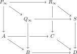

Let \(X\) be a topological space and let \(A, B \subseteq X\) be two subspaces whose interiors cover \(X\). Assume that \(A\) and \(B\) are connected and that their intersection \(C := A \cap B\) is (connected and) simply connected. If the pair \((A,C)\) is \((m-1)\)-connected and the pair \((B,C)\) is \((n-1)\)-connected, \(m,n \geq 3\), then the triple \((X;A,B)\) is \((m+n-2)\)-connected.
In homotopy-theoretic language, we may think of \(X\), \(A\), \(B\) and \(C\) as animae, where \(X = A \sqcup_C B\) is the (homotopy) pushout of two maps \(f\colon C \to A\) and \(g\colon C \to B\). The assumptions then require \(f\) to be \(n\)-connected and \(g\) to be \(m\)-connected (recall from Warning 3.17 the shift in terminology) and the conclusion translates to the condition that the map \(C \to A \times_X B\) is \((m+n)\)-connected.
It turns out that this statement holds in an arbitrary topos, and in fact admits a purely topos-theoretic proof. It will be a special case of a more general version of the Blakers–Massey theorem, due to Anel et al. (2020), which can be formulated for an arbitrary modality \(L\).
Let \(\square_X\) denote Day convolution in \(\Ar(T_{/X})\), with respect to the minimum operation on \([1]\), where \(\Ar(T_{/X})=\Fun([1],T_{/X})\). Given maps \(u\colon A \to B\) and \(v\colon C \to D\) in \(T_{/X}\), the map \(u \square_X v\) is the dashed arrow in the pushout square:
This operation is also known as the pushout product of \(u\) and \(v\) over \(X\).
Let \((L,R)\) be a modality in \(T\), and consider a pushout square
If \(\Delta_f \square_Z \Delta_g\) lies in \(L\), then also the gap map \(Z \to X \times_W Y\) lies in \(L\).
In the statement we regard \(\Delta_f\) and \(\Delta_g\) as maps in \(T_{/Z}\) via the projections \(p_1\colon Z \times_X Z \to Z\) and \(p_1\colon Z \times_Y Z \to Z\).
We prove this theorem below. We first deduce the ordinary Blakers–Massey theorem.
Let \(u\) and \(v\) be maps in \(T_{/Z}\). If \(u\) is \(m\)-connected and \(v\) is \(n\)-connected, then \(u \square_Z v\) is \((m+n+2)\)-connected.
Proof
We work in the topos \(T_{/Z}\). Choose a small collection \(\Gg\) of generators. The class of \(m\)-connected maps is the saturation of the maps
\[S^{m+1}\otimes U\longrightarrow U,
\qquad U\in\Gg.\]
Indeed, a map is right orthogonal to these generators precisely when its fibers are \(m\)-truncated, by the characterization of truncated objects in Section 3.1. The same description holds for the \(n\)-connected maps.The pushout product preserves colimits separately in both variables. It therefore suffices to take \(u\) and \(v\) of the displayed form, allowing arbitrary objects \(U\) and \(V\). Their pushout product is
where \(*\) denotes the join of animae. Since \(S^{m+1}*S^{n+1}\iso S^{m+n+3}\), this map is \((m+n+2)\)-connected. The \((m+n+2)\)-connected maps form a saturated class, so the same follows for arbitrary \(u\) and \(v\).
Assume \(f\) is \(m\)-connected and \(g\) is \(n\)-connected. Then the map \(Z \to X \times_W Y\) is \((m+n)\)-connected.
Proof
The map \(\Delta_f\) is \((m-1)\)-connected while \(\Delta_g\) is \((n-1)\)-connected. By Lemma 5.17, this means that \(\Delta_f \square_Z \Delta_g\) is \((m-1 + (n-1) + 2)\)-connected, and thus the theorem applies.
While the proof of the Blakers–Massey theorem is quite involved, the dual Blakers–Massey theorem is easy to prove. It states that for a pullback square
if the absolute pushout product \(f \square g\) lies in \(L\), then the cogap map \(X \sqcup_W Y \to Z\) lies in \(L\). Indeed, the cogap map is the base change of
If \(A\) and \(B\) are \(L\)-cartesian, then their composite \(A+B\) is \(L\)-cartesian.
If \(A\) and \(A+B\) are \(L\)-cartesian and \(f\) is an effective epimorphism, then \(B\) is \(L\)-cartesian.
If \(B\) is cartesian and \(A+B\) is \(L\)-cartesian, then \(A\) is \(L\)-cartesian.
Proof
The gap map \(X \to Y \times_{Y''} X''\) of \(A+B\) may be factored as
\[X \to Y \times_{Y'} X' \to Y \times_{Y''} X'',\]
where the first map is the gap map of \(A\) and the second map is the base change along \(Y \to Y'\) of the gap map of \(B\). This immediately implies (1). For (2), it follows from right cancellation that the base change along \(Y \to Y'\) of the gap map of \(B\) lies in \(L\), hence so does the gap map itself by Lemma 5.4.Part (3) is clear: if \(B\) is cartesian, then the gap map of \(A\) agrees with that of \(A+B\).
where the four maps lie in \(L\) and \(R\) as indicated. If the outer square is \(L\)-cartesian, then the bottom square is cartesian.
Proof
By left cancellation, the gap map \(Z \to Y \times_{Y'} Z'\) of the bottom square lies in \(R\). Consider the commutative diagram Then the three maps lie in \(L\) as indicated, hence by right cancellation so does the map \(Z \to Y \times_{Y'} Z'\). Since \((L,R)\) is a factorization system, it follows that this map is an isomorphism, as desired.
Let \(X_{\bullet},Y_{\bullet} \in \Fun(I,T)\) be two diagrams with colimits \(X\) and \(Y\). If we are given an \(L\)-cartesian transformation \(X_{\bullet} \to Y_{\bullet}\), then the square
is \(L\)-cartesian. Equivalently: the subcategory \(\Ar^{L\text{-}\cart}(T) \subseteq \Ar(T)\) is closed under colimits.
Proof
Let \(P_{\bullet}:=Y_{\bullet}\times_YX\). The transformation \(X_{\bullet}\to P_{\bullet}\) has the same gap maps as \(X_{\bullet}\to Y_{\bullet}\) and is therefore \(L\)-cartesian, while \(P_{\bullet}\to Y_{\bullet}\) is cartesian. Since colimits in a topos are universal, \(\colim P_{\bullet}\iso X\). By Proposition 5.21, it is therefore enough to treat the transformation \(X_{\bullet}\to P_{\bullet}\). Replacing \(Y_{\bullet}\) by \(P_{\bullet}\), we may assume that the induced map \(X\to Y\) on colimits is an isomorphism.Factor the transformation pointwise as
and consider the resulting commutative diagram: By Lemma 5.22, the transformation \(Z_{\bullet} \to Y_{\bullet}\) is cartesian. Descent then implies that the bottom square is a pullback. Since \(L\) is closed under colimits in \(\Ar(T)\), the map \(X \to Z\) lies in \(L\). Its composite \(X\to Z\to Y\) is an isomorphism and hence lies in \(L\), so right cancellation gives \(Z\to Y\in L\). Each map \(Z_i\to Y_i\) is a base change of \(Z\to Y\), because the bottom square is cartesian, and hence also belongs to \(L\). But it belongs to \(R\) by construction, so it is an isomorphism. Thus \(Z_{\bullet}\to Y_{\bullet}\) and \(Z\to Y\) are isomorphisms. Under these identifications, the gap maps \(X_i\to Y_i\times_YX\) are precisely the maps \(X_i\to Z_i\), which lie in \(L\) by construction.
Proof
The proof has three steps. We first replace one leg by its effective-epimorphism part. We then encode the assumed pushout product as the gap map of one face of a cube. Modal descent propagates this information across the cube, after which cancellation identifies the original square as \(L\)-cartesian.Consider a pushout square where \(\Delta_f \square_Z \Delta_g \in L\). We must show that also \(Z \to X \times_W Y \in L\).We first reduce to the case where \(f\) is an effective epimorphism. Indeed, letting \(X'\) be the image of \(f\), we get a commutative diagram where the two displayed squares are still pushouts. By Proposition 3.11, the lower square is a pullback square. We then observe that the diagonal \(\Delta_f\) is isomorphic to the diagonal \(\Delta_{f'}\), and that the gap map \(Z \to X \times_W Y\) agrees with the gap map \(Z \to X' \times_{W'} Y\) of the top square.
Since \(X' \to X\) is a monomorphism and \(f\) factors through \(X'\), the canonical map \(Z \times_{X'} Z \to Z \times_X Z\) is an isomorphism. Under this isomorphism the two diagonal maps from \(Z\) agree. Moreover, the lower pullback square identifies \(X'\) with \(X \times_W W'\). Since \(Y \to W\) factors through \(W'\), we obtain
\[X \times_W Y \iso (X \times_W W') \times_{W'} Y \iso X' \times_{W'} Y.\]
These identifications commute with the maps from \(Z\).
Mapping an arbitrary object \(K\) into \(Z \times_X Z\) amounts to giving two maps \(K \rightrightarrows Z\) whose composites to \(X\) agree. Because \(X' \to X\) is a monomorphism, this agreement is equivalent to agreement after mapping to \(X'\), which gives the first isomorphism. Similarly, a map \(K \to X \times_W Y\) is a pair of maps to \(X\) and \(Y\) agreeing over \(W\). The map to \(Y\) already determines a map to \(W'\), and the pullback square forces the map to \(X\) to factor uniquely through \(X'\), giving the second isomorphism.
It thus suffices to prove the statement for the top square, or equivalently in the case where \(f\) is an effective epimorphism.Unwinding definitions, we see that the map
is given on the first component by \((p_1,p_2,p_1,p_1)\) and on the second by \((p_1,p_1,p_1,p_2)\).
Regard \(Z \times_X Z\) and \(Z \times_Y Z\) as pointed objects of \(T_{/Z}\), with structure map \(p_1\) and basepoint given by the corresponding diagonal. The pushout product of the two basepoints is the canonical map from their wedge to their product. Its source is therefore \((Z \times_X Z) \sqcup_Z (Z \times_Y Z)\), while its target is their fiber product over \(Z\).
On the summand \(Z \times_X Z\), the map to the first factor of the product is the identity \((p_1,p_2)\), while the map to \(Z \times_Y Z\) is the diagonal applied to \(p_1\), namely \((p_1,p_1)\). This gives \((p_1,p_2,p_1,p_1)\). The calculation on the other summand is symmetric and gives \((p_1,p_1,p_1,p_2)\). The fiber product is taken using the first projections, which is why the repeated coordinate is \(p_1\).
In particular, this map is the gap map of the top face of the following commutative cube: We now make the following series of claims:
The top face is a pushout. More generally, for objects \(A,B\) in some pointed category \(C\) (here \(C = T_{Z//Z}\)) the lower-right corner of is a pushout, by the pasting property of pushout squares.
In \(C=T_{Z//Z}\) the zero object is the identity of \(Z\). Take \(A=Z \times_X Z\) and \(B=Z \times_Y Z\), with their diagonal basepoints and first projections as structure maps. Then \(A \vee B\) is exactly \((Z \times_X Z) \sqcup_Z (Z \times_Y Z)\), and the lower-right square in the displayed \(3\)-by-\(3\) diagram is the top face of the cube.
Call the upper-left, upper-right, and lower-right squares \((a)\), \((b)\), and \((c)\). The square \((a)\) is the pushout square defining \(A \vee B\). The composite rectangles \((a)+(b)\) and \((b)+(c)\) are trivial pushout squares. Since \((a)\) and \((a)+(b)\) are pushouts, the pushout pasting law first shows that \((b)\) is a pushout. Since \((b)\) and \((b)+(c)\) are pushouts, it then shows that \((c)\) is a pushout. This is the required lower-right square.
The left and back faces are \(L\)-cartesian. By symmetry it suffices to do this for the left face. Writing \(\sigma\colon Z \times_Y Z \xrightarrow{\cong} Z \times_Y Z\) for the swap map, this face decomposes as The left square is \(L\)-cartesian by hypothesis. The right square is a pullback square. It follows that the outer rectangle is \(L\)-cartesian.
The gap map of the left square is the assumed map \(\Delta_f \square_Z \Delta_g\), precomposed with the isomorphism \(\id \sqcup \sigma\). Hence it lies in \(L\). The gap map of the right square is an isomorphism because that square is cartesian, so it also lies in \(L\). Part (1) of Proposition 5.21 then shows that their composite, which is the left face of the cube, is \(L\)-cartesian.
The automorphism \(\id \sqcup \sigma\) changes only the ordering of the two coordinates coming from \(Z \times_Y Z\). Precomposition by an isomorphism produces an isomorphic arrow. Since every isomorphism lies in \(L\) and \(L\) is closed under composition, membership in \(L\) is unchanged.
By modal descent applied when \(I\) is the span diagram \(\pushout\), the front and right faces are \(L\)-cartesian.
The cube is a pushout square in the arrow category: its top and bottom faces are pushouts, while its left and back faces are the two input morphisms. Those input faces are \(L\)-cartesian by the preceding claims. Since Proposition 5.23 says that \(L\)-cartesian arrows are closed under colimits, the remaining two structure maps in this pushout square, namely the front and right faces, are also \(L\)-cartesian.
Let \(I\) be the category indexing a span. The top and bottom faces are obtained by taking the colimits of the corresponding spans in the upper and lower levels of the cube. The left and back faces give the naturality squares of an \(L\)-cartesian transformation between these spans. Applying modal descent to the two endpoint inclusions into the colimit gives precisely the front and right faces.
No separate stability theorem for cubical diagrams is being invoked. The only inputs are that the two horizontal faces are pushouts, that the two adjacent faces are \(L\)-cartesian, and that the subcategory of \(L\)-cartesian arrows is closed under the span-shaped colimit, exactly as asserted by Proposition 5.23.
Finally, we may decompose the right face of the diagram as the composite of two squares: Here the left square is cartesian, \(f\) was assumed to be an effective epimorphism, and the outer rectangle is \(L\)-cartesian by the previous point. It follows from Proposition 5.21 that the right square is \(L\)-cartesian.
Apply part (2) of Proposition 5.21. Its square \(A\) is the cartesian left square displayed above, its composite \(A+B\) is the \(L\)-cartesian outer rectangle, and the map called \(f\) there is the effective epimorphism \(Z \to X\) along their common lower edge. The conclusion is that \(B\), the right square, is \(L\)-cartesian.
The left square is cartesian because \(Z \times_X Z\) is the pullback of \(f\) along itself. A cartesian square is \(L\)-cartesian since its gap map is an isomorphism. The outer rectangle is the right face of the cube and was shown \(L\)-cartesian by modal descent. Finally, the image reduction made \(f\) an effective epimorphism. Thus every hypothesis of part (2) is used exactly once.
This gives the claim.
The right square just proved \(L\)-cartesian is the original pushout square with vertices \(Z,Y,X,W\). Its gap map is, by definition, the canonical map \(Z \to X \times_W Y\). Thus its being \(L\)-cartesian is exactly the desired conclusion.
5.2.2. Wärn's alternative proof
We now explain a second proof of Theorem 5.16, following the description of path spaces of pushouts due to Wärn (2025). The main point of this approach is that the pullback \(B \times_D C\) of a pushout
can be built as a sequential colimit of objects of zigzags. The first non-trivial step in this filtration is the relative pushout product \(\Delta_f \square_A \Delta_g\). So if we can show that all later maps in the filtration lie in the modality \(L\), then so does the gap map \(A \to B \times_D C\).
Starting with a span \(Q_0 \leftarrow P_0 \to R_0\) over \(B \leftarrow A \to C\), define a sequence of spans
\[Q_n \leftarrow P_n \to R_n\]
by alternately making the left and right legs cartesian: for odd \(n\) we apply the left construction to the previous span, and for even \(n \geq 2\) we apply the right construction. Let
be a pushout square in \(T\). Let \(Q_0 \leftarrow P_0 \to R_0\) be a span over \(B \leftarrow A \to C\), and write
\[S := Q_0 \sqcup_{P_0} R_0.\]
Then the colimit span \(Q_{\infty} \leftarrow P_{\infty} \to R_{\infty}\) from Construction 5.26 has pushout \(S\), and the canonical maps
\[Q_{\infty} \to S \times_D B, \qquad
P_{\infty} \to S \times_D A, \qquad
R_{\infty} \to S \times_D C\]
are isomorphisms.
Proof
By Construction 5.24, each step in the zigzag construction preserves the pushout of the span. Since colimits commute with colimits, the pushout of \(Q_{\infty} \leftarrow P_{\infty} \to R_{\infty}\) is again \(S\).For odd \(n\), the map \(P_n \to Q_n\) is cartesian over \(A \to B\) by construction. Since the odd natural numbers are cofinal in \(\N\), and since sequential colimits in a topos are universal, it follows that \(P_{\infty} \to Q_{\infty}\) is cartesian over \(A \to B\). Similarly, using the even stages, \(P_{\infty} \to R_{\infty}\) is cartesian over \(A \to C\).Now compare the pushout square \(Q_{\infty} \sqcup_{P_{\infty}} R_{\infty} \simeq S\) with the original pushout square \(B \sqcup_A C \simeq D\):

The left and back faces of the cube are cartesian by the previous paragraph, while the top and bottom faces are pushouts. Descent for pushouts therefore implies that the front and right faces are cartesian. This gives \(Q_{\infty} \iso S \times_D B\) and \(R_{\infty} \iso S \times_D C\), and then also \(P_{\infty} \iso S \times_D A\).
We wish to apply this result to the Blakers–Massey problem, where we start with \(B \leftarrow \emptyset \to \emptyset\). The following is the starting observation:
For the zigzag construction associated to the initial span \(B \leftarrow \emptyset \to \emptyset\) over \(B \xleftarrow{f} A \xrightarrow{g} C\), the map \(P_2\to P_3\) is a pushout of \(\Delta_f\square_A\Delta_g\).
Proof
The first step gives
\[Q_1\simeq B, \qquad P_1\simeq A, \qquad R_1\simeq A.\]
The second step makes the right leg cartesian, hence gives
\[R_2\simeq A, \qquad P_2\simeq A\times_C A, \qquad Q_2\simeq (A\times_C A)\sqcup_A B,\]
where the map \(A\to A\times_C A\) is \(\Delta_g\) and \(A\to B\) is \(f\). The third step makes the left leg cartesian, so
\[P_3\simeq Q_2\times_B A \simeq ((A\times_C A)\times_B A)\sqcup_{A\times_B A} A,\]
where we used universality of pushouts. Observe that we may rewrite \((A\times_C A)\times_B A\) as \((A\times_C A)\times_A (A \times_B A)\). Write \(j_C\) and \(j_B\) for the two coprojections into \((A\times_C A)\sqcup_A(A\times_B A)\), and write \(q\) for the canonical map from this pushout to the corresponding product. Consider now the following commutative diagram: The bottom rectangle is the pushout square defining \(P_3\). The upper-left square is the pushout square defining the source of \(q\), and the left rectangle is a pushout by construction. The pasting law therefore shows that the lower-right square is a pushout. Hence \(P_2=A\times_CA\to P_3\) is the cobase change of \(q=\Delta_g\square_A\Delta_f\). By symmetry of the pushout product, this is isomorphic to \(\Delta_f\square_A\Delta_g\), as desired.
The next observation is that passing to the next stage of the zigzag construction preserves any existing connectivity estimates of the current stage.
Let \(L\) be a modality, and consider the zigzag construction associated to a span \(Q_0 \leftarrow P_0 \to R_0\) over \(B \leftarrow A \to C\). If \(P_{n-1} \to P_n\) lies in \(L\) for some \(n\geq 2\), then also \(P_n \to P_{n+1}\) lies in \(L\).
Proof
Suppose first that \(P_n\) is obtained from \(P_{n-1}\) by making the left leg cartesian, so that the next step makes the right leg cartesian. Since \(n\geq 2\), the preceding step made the right leg cartesian, so
\[P_{n-1} \iso R_{n-1}\times_C A.\]
Unwinding the definitions of these two consecutive steps gives
\[P_{n+1}
\iso (P_n\times_C A)\sqcup_{P_{n-1}\times_C A}(R_{n-1}\times_C A)
\iso (P_n\times_C A)\sqcup_{P_{n-1}\times_C A}P_{n-1}.\]
Under this identification, the composite \(P_{n-1}\to P_n\to P_{n+1}\) is the canonical map from the second summand. It is therefore the pushout of
\[P_{n-1}\times_C A \longrightarrow P_n\times_C A\]
along \(P_{n-1}\times_C A\to P_{n-1}\). The displayed map is a base change of \(P_{n-1}\to P_n\), hence lies in \(L\). It follows that the composite \(P_{n-1}\to P_{n+1}\) lies in \(L\). Since \(P_{n-1}\to P_n\) lies in \(L\) by assumption, right cancellation for the class \(L\) now implies that \(P_n\to P_{n+1}\) lies in \(L\).The case where \(P_n\) is obtained by making the right leg cartesian is symmetric, with \(B\) in place of \(C\).
Combining the previous two lemmas, we obtain a neat simple proof of the generalized Blakers–Massey theorem.
Consider a pushout square and let \(L\) be a modality such that \(\Delta_f \square_A \Delta_g\) lies in \(L\). We must show that the gap map \(A \to B \times_D C\) lies in \(L\).Apply the zigzag construction to the span \(B \leftarrow \emptyset \to \emptyset\). The first step produces the span
\[B \leftarrow A \xrightarrow{=} A,\]
so that \(R_1 \simeq A\). Note that \(S = B \sqcup_{\emptyset} \emptyset = B\), so by Theorem 5.27 we have \(R_{\infty} \iso B \times_D C\). The gap map \(A \to B \times_D C\) identifies with
\[R_1 \longrightarrow R_{\infty}.\]
Since morphisms in \(L\) are closed under transfinite composites, it thus remains to show that each map \(R_m \to R_{m+1}\) is in \(L\) for \(m \geq 1\). For \(m\) odd, these maps are isomorphisms. For \(m\) even, these maps are pushouts of \(P_m \to P_{m+1}\), so it remains to show that all these maps are in \(L\). By Lemma 5.29, it suffices to check this for \(m=2\). But by Lemma 5.28, the map \(P_2\to P_3\) is a pushout of \(\Delta_f\square_A\Delta_g\), hence lies in \(L\) by assumption.
References
Mathieu Anel, Georg Biedermann, Eric Finster, André Joyal. A generalized Blakers-Massey theorem. J. Topol., 13 (4), 1521–1553. 2020.


 Apply part (2) of Proposition 5.21. Its square \(A\) is the cartesian left square displayed above, its composite \(A+B\) is the \(L\)-cartesian outer rectangle, and the map called \(f\) there is the effective epimorphism \(Z \to X\) along their common lower edge. The conclusion is that \(B\), the right square, is \(L\)-cartesian.The left square is cartesian because \(Z \times_X Z\) is the pullback of \(f\) along itself. A cartesian square is \(L\)-cartesian since its gap map is an isomorphism. The outer rectangle is the right face of the cube and was shown \(L\)-cartesian by modal descent. Finally, the image reduction made \(f\) an effective epimorphism. Thus every hypothesis of part (2) is used exactly once.
Apply part (2) of Proposition 5.21. Its square \(A\) is the cartesian left square displayed above, its composite \(A+B\) is the \(L\)-cartesian outer rectangle, and the map called \(f\) there is the effective epimorphism \(Z \to X\) along their common lower edge. The conclusion is that \(B\), the right square, is \(L\)-cartesian.The left square is cartesian because \(Z \times_X Z\) is the pullback of \(f\) along itself. A cartesian square is \(L\)-cartesian since its gap map is an isomorphism. The outer rectangle is the right face of the cube and was shown \(L\)-cartesian by modal descent. Finally, the image reduction made \(f\) an effective epimorphism. Thus every hypothesis of part (2) is used exactly once.